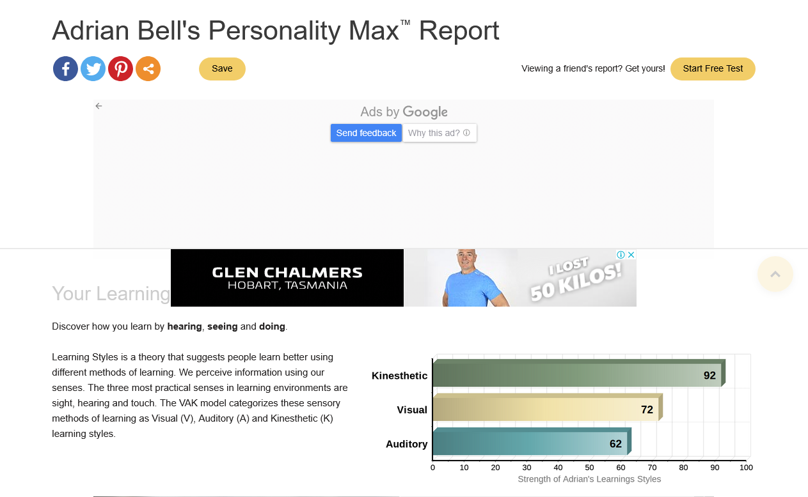
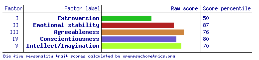
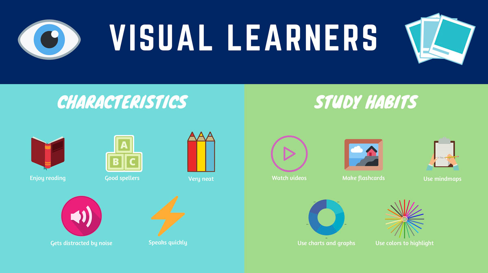
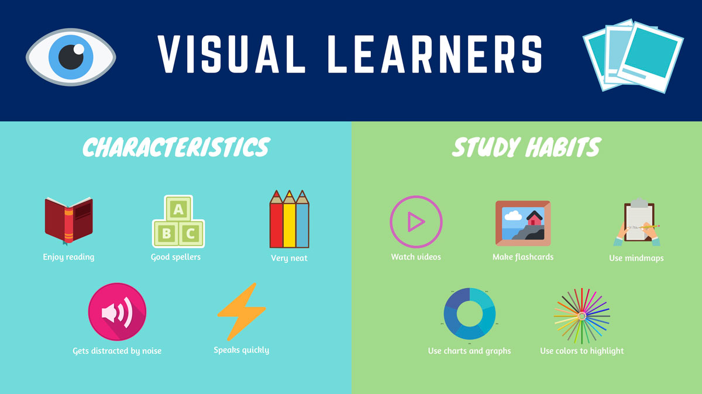

Meet The Team
Adrian Bell ~ S3941189

I currently live in Far North Queensland with my wife and two young boys, having moved here from Northern Ireland in 2007. I enjoy spending my free time in the outdoors, and have a particular interest in nature photography. Although I have always had an interest in computers I do not have a professional background in I.T. I have undertaken this course out of personal interest and to move into the IT profession in the future, possibly as a systems administrator or similar.
Personality Type
Myers-Briggs

Learning Style

Big Five

All three test results give a consistent summary of my strengths within a team. I am hard-working, responsible and goal oriented. I feel that this will be an asset to the team, as I can take ownership of tasks and be relied upon to do my best and follow through on what I have committed to. I am confident in my abilities and willing to give things a go. I learn best when I am doing something, so I can think on my feet and learn new skills as I work towards completing tasks.
Aidan Fox ~ S3956717

I'm a Rural boy who grew into computing to keep touch with the world, my Hobbies are exploring new genres of Music, Combat Flight Simulators, Virtual Reality and designing gaming PC’s for friends. I'm passionate about IT and want to learn everything I can so that I can keep what I've learned current. My experience with IT starts and stops at the consumer level however I’ve played at being a support technician long enough for the gap between the mask and me to become hard to see. I'm part of team KAALAB and I hope that I can use some of the skills I taught myself from some of my lesser defining hobbies to really prove myself.
Personality Type

 

Bryan Wedding ~ S3956714

Born in Queensland and now residing in the Barossa Valley, South Australia. Worked as a Corporate Banking Professional for 5 years and am now pursuing to develop in IT to hopefully enter a career within the industry.
The change to a career in IT was founded from a childhood interest in computing, Basic HTML and Web-Design. Due to lack of professional skills, I am hoping to further skills as a member of the K.A.A.L.A.B Team and have it potentially lead to a career in Software Engineering & Development.